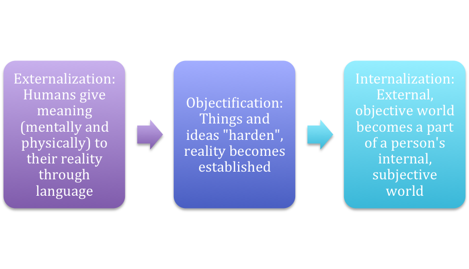
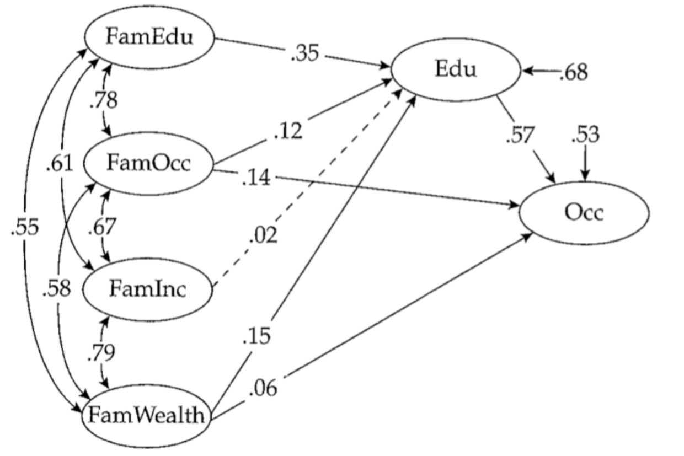
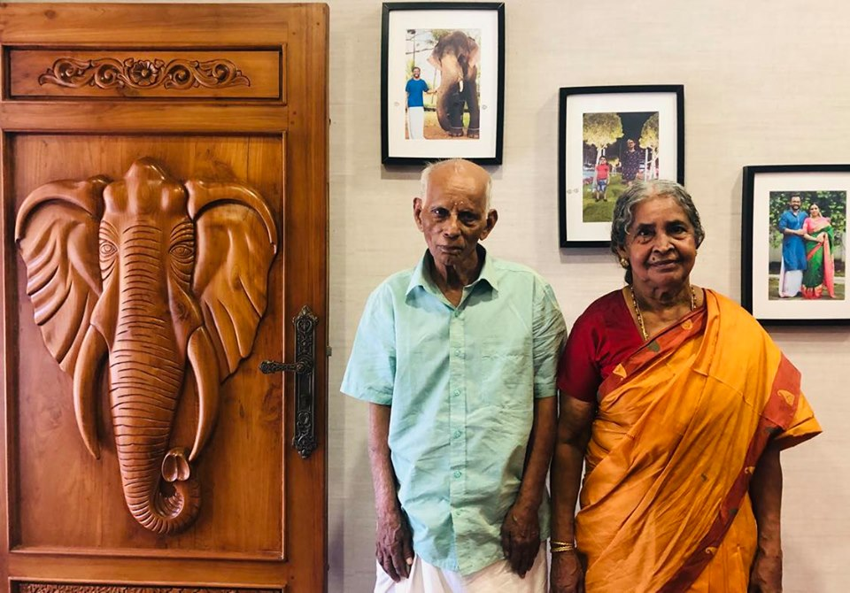

Society & Social Interaction
Every morning you step into a world you did not build, yet you know exactly how to move through it — where to stand in line, how loudly to speak, when to shake a hand and when to bow out. That effortless competence is not instinct; it is society, the largest structure sociologists study, working through the smallest thing they study, interaction. This chapter zooms out to the grand scale — the kinds of societies humans have built as their tools changed — and then zooms all the way in to the moment two people meet and quietly agree on what is going on. Along the way you will meet the theorists who taught us that reality is negotiated, that we all wear masks, and that the positions we occupy hand us scripts we did not write. Keep both lenses open at once, because the macro world and the micro moment are the same world seen at different magnifications.
By the end of this chapter you can
- Define society and trace its major types from hunter-gatherer to postindustrial and information societies.
- Explain how subsistence technology (Gerhard Lenski) drives the transition from one kind of society to the next.
- Summarize the social construction of reality and state the Thomas theorem.
- Explain the self-fulfilling prophecy and how a shared definition of a situation produces real consequences.
- Distinguish ascribed from achieved status, and identify a master status and a status set.
- Tell role conflict apart from role strain, and describe role exit.
- Describe Erving Goffman’s dramaturgy — front stage, back stage, and impression management.
- Identify the major social institutions and read them through the three sociological paradigms.
Section 1Types of societies
What we mean by “a society”
A society is a group of people who share a territory and a culture and who interact with one another over time. That definition sounds mild, but it hides a puzzle that has driven sociology since Auguste Comte coined the discipline’s name: how does a crowd of separate individuals cohere into a durable order that outlives any one of them? Émile Durkheim gave the classic answer with the idea of social solidarity — the glue that binds members together. In small, traditional societies people are bound by mechanical solidarity, a likeness of belief and work; everyone does roughly the same things and shares the same conscience. As societies grow and specialize, that gives way to organic solidarity, in which people are bound precisely because they differ and depend on one another’s specialized labor — the farmer needs the mechanic needs the nurse needs the coder.
The subsistence ladder
The sociologist Gerhard Lenski argued that the single best predictor of what a society looks like is its subsistence technology — how it gets food and energy. As that technology advances, everything else shifts with it: population size, the division of labor, the amount of surplus, and, fatefully, the degree of inequality. Hunter-gatherer (foraging) societies, the oldest and for most of history the only kind, survive by collecting wild plants and hunting game. They are small, nomadic, organized around kinship, and strikingly egalitarian — with no stored surplus, there is little to hoard and little to fight over. Pastoral societies domesticate animals and horticultural societies cultivate plants in garden plots; both can settle down, produce a surplus, and support larger populations, and with that surplus the first durable inequalities appear.
The agricultural (agrarian) revolution — the plow, irrigation, and animal power — multiplied the surplus enormously and gave us cities, writing, standing armies, and steep feudal hierarchies of nobles and peasants. Then the Industrial Revolution harnessed fossil-fuel energy to machines, pulling people off the land into factories and cities, and produced the mass, bureaucratic, class-divided world that Marx, Weber, and Durkheim spent their careers explaining. The most recent turn is the postindustrial society, named by Daniel Bell, in which the economy pivots from making things to providing services and, above all, handling information. In an information society, knowledge itself is the key resource, and the person who can find, interpret, and move data holds the leverage that land once gave the noble and the factory once gave the industrialist.
| Society type | Subsistence / technology | Scale | Social organization | Inequality |
|---|---|---|---|---|
| Hunter-gatherer | Foraging wild plants & game | Small mobile bands | Kinship; nomadic; sharing | Minimal |
| Pastoral | Herding domesticated animals | Larger, semi-nomadic | Trade of surplus; chiefs emerge | Growing |
| Horticultural | Small-plot plant cultivation | Settled villages | Property; hereditary status | Growing |
| Agricultural | Plow, irrigation, animal labor | Cities & states | Feudal hierarchy; division of labor | Steep |
| Industrial | Machines & fossil-fuel energy | Mass urban society | Factories, wage labor, bureaucracy | Class-based |
| Postindustrial / information | Services, knowledge, digital data | Global & networked | Information & services dominate | Knowledge-based |
- A society is people who share territory and culture and interact over time.
- Lenski: a society’s subsistence technology shapes its size, division of labor, surplus, and inequality.
- The sequence runs hunter-gatherer → pastoral / horticultural → agricultural → industrial → postindustrial / information.
- Durkheim’s mechanical solidarity (likeness) gives way to organic solidarity (interdependence) as societies specialize.
Section 2The social construction of reality

Reality as a social product
Sociologists take a claim that sounds outrageous at first and then becomes obvious: much of what we treat as simply “real” is in fact agreed upon. In their 1966 book The Social Construction of Reality, Peter Berger and Thomas Luckmann argued that we build our shared world through repetition. A behavior gets done once, then again, until it becomes a habit (habitualization); habits shared across people harden into rules and roles (institutionalization); and eventually the arrangement is passed to newcomers as simply “the way things are.” Money is the tidy example: a paper bill has value only because millions of us behave as though it does. Nothing about the paper compels that agreement — and the moment the agreement collapses, so does the value.
The Thomas theorem
The engine of this process was stated most sharply by William Isaac Thomas and Dorothy Swaine Thomas in 1928: “If men define situations as real, they are real in their consequences.” This is the Thomas theorem, and it is deceptively powerful. It does not say wishing makes things true. It says that once people act on their definition of a situation, their actions produce genuine effects — regardless of whether the original definition was accurate. Your definition of the situation — is this a date or a business meeting? a joke or an insult? a friendly dog or a threat? — steers what you do next, and what you do next reshapes the situation for everyone in it.
Self-fulfilling prophecies
Robert K. Merton drew out the theorem’s most striking consequence: the self-fulfilling prophecy, a false belief that causes its own confirmation. His classic case is a run on a solvent bank: a rumor that the bank will fail leads depositors to yank their money out, and the withdrawals themselves bankrupt a bank that was perfectly healthy. The prophecy was false when it was uttered and true once people acted on it. The same loop runs through labels in a classroom, reputations in a neighborhood, and stereotypes in a hiring pool — which is exactly why sociologists insist that a “definition” is never just talk.
| Situation defined as… | …action people take | …real consequence |
|---|---|---|
| “This bank is about to fail” (false) | Depositors rush to withdraw | The solvent bank actually collapses |
| A student labeled “gifted” | Teachers invest more attention | The student achieves more |
| A neighborhood defined as “dangerous” | People and businesses avoid it | Disinvestment and real decline |
- The social construction of reality (Berger & Luckmann) holds that much of “reality” is built and sustained through shared, repeated human activity.
- The Thomas theorem: situations defined as real become real in their consequences.
- Your definition of the situation guides your action, which then reshapes the situation itself.
- A self-fulfilling prophecy (Merton) is a false belief that triggers behavior making it come true.
Section 3Status and role

Status: your position in the structure
In everyday speech “status” means prestige. In sociology it means something more neutral and more useful: a status is any recognized social position a person occupies — daughter, student, cashier, citizen, patient. You hold many at once, and the whole bundle is your status set. Usually the statuses coexist quietly, but one can come to dominate how others see you and how you see yourself. That is a master status — a position so central it colors everything else. A surgeon’s title, a celebrity’s fame, or the stigma of a criminal record can each function as a master status, overshadowing every other position the person holds.
Ascribed versus achieved
Statuses come to us in two ways. An ascribed status is one you are born into or assigned involuntarily, with little effort or choice of your own — your age category, your family of birth, the sex or race others assign you, being someone’s sibling. An achieved status is one you earn or take on through effort, talent, and choice — college graduate, welder, marathon finisher, spouse, felon. The line can blur (an ascribed status like being born wealthy makes the achieved status of “Ivy League graduate” far easier to reach), and that blurring is one of sociology’s great themes: the head start you were handed shapes the finish line you can “achieve.”
Roles, and the tension inside them
If a status is a position, a role is the set of behaviors, obligations, and expectations attached to it — the status is the hat, the role is how society expects you to wear it. Because a single status can carry several roles at once, Robert Merton called that bundle a role set. And precisely because we hold many statuses and many roles, tension is built in, and sociologists distinguish two kinds. Role strain is friction within a single role whose demands pull against each other — the professor expected to be both a warm mentor and a hard grader. Role conflict is friction between the roles of two different statuses — the working parent whose shift and whose child’s recital fall at the same hour. When the strain or conflict becomes unbearable, people may undertake role exit (a process mapped by Helen Rose Fuchs Ebaugh), disengaging from a role central to their identity — leaving the clergy, the marriage, or the profession — and building a new sense of self on the far side.
| Role strain | Role conflict | |
|---|---|---|
| Where the tension sits | Within one role | Between the roles of two statuses |
| Source | Competing demands of a single position | Two positions demanding you at once |
| Example | A nurse who must comfort a patient and enforce painful care | A student-athlete with a game and a final exam the same day |
| Typical response | Balance or prioritize inside the role | Compartmentalize, negotiate, or exit a role |
- A status is a social position; your status set is all of them together; a master status dominates the rest.
- Ascribed statuses are assigned; achieved statuses are earned — and the two interact.
- A role is the behavior expected of a status; a status can carry a whole role set.
- Role strain is tension within a role; role conflict is tension between roles of different statuses.
Section 4Dramaturgy

Life as theater
Erving Goffman built an entire sociology out of a single metaphor. In The Presentation of Self in Everyday Life (1959), he proposed dramaturgy: we should analyze social interaction the way a critic analyzes a play. Each of us is a performer; the people around us are the audience; and every encounter is a small production in which we try to manage the impression others form of us. Goffman called this effort impression management — the constant, mostly unconscious work of controlling how we come across through dress, speech, posture, and setting. This is symbolic interactionism at its most vivid: the self is not a fixed object you carry around but something produced, moment by moment, in front of others.
Front stage and back stage
The heart of the theory is a distinction between two regions. The front stage is wherever an audience is present and we deliver the polished, expected performance — the server who smiles, upsells, and calls you “folks.” The back stage is where the audience cannot see and we drop the act, rehearse, and relax — the same server rolling their eyes and venting the moment the kitchen door swings shut. We use a personal front (appearance and manner) and a setting (props and scenery, like a doctor’s white coat and diploma-lined office) to make the performance convincing. Much of the anxiety of social life comes from the risk that the two regions will collide — that a customer will wander into the kitchen, or a text meant for a friend will reach the boss.
Teams, face, and failed performances
Performances are often collaborative: a team of performers cooperates to stage a single impression, as waiters and cooks together produce “the restaurant,” or two parents present a united front to a child. When a performance slips — a stumble, a contradiction, an embarrassing reveal — people scramble to do face-work, the repairs that save the situation from collapse: the nervous laugh, the quick apology, the tactful looking-away by an audience that pretends not to notice. Goffman’s theater connects back to Charles Horton Cooley’s looking-glass self — the idea that we come to know ourselves by imagining how we appear to others — and to George Herbert Mead’s insight that the self arises only in interaction. We perform for the audience, and in their reactions we read who we are.
| Feature | Front stage | Back stage |
|---|---|---|
| Audience present? | Yes | No |
| Behavior | Idealized; follows the social script | Relaxed; rehearse and drop the act |
| Restaurant example | Server smiling and upselling at the table | Server venting and joking in the kitchen |
| Goffman’s term | The performance region | The region where the act is prepared |
- Dramaturgy (Goffman) analyzes interaction as theatrical performance.
- Impression management is the work of controlling how others perceive us.
- The front stage hosts the polished performance; the back stage is where we drop it.
- The performed self links to Cooley’s looking-glass self and Mead’s claim that the self is born in interaction.
Section 5Social institutions

What a social institution is
Zoom back out from the two-person encounter and you find that interactions do not float free — they are channeled by social institutions, the enduring patterns of roles, norms, and organizations that a society develops to meet its basic and recurring needs. An institution is not a building and not a single organization; it is the whole standardized way a society handles a fundamental task. Every society must reproduce and socialize its young, transmit knowledge, produce and distribute goods, keep order, and answer questions of ultimate meaning — and around each of those tasks a durable institution grows.
The major institutions
Sociologists conventionally identify a handful. The family organizes reproduction, care, and the first socialization of children. Education transmits knowledge and skills and sorts people into positions. Religion addresses meaning, morality, and the sacred, and binds communities — Durkheim thought it was society worshipping itself. The economy organizes the production and distribution of goods and services. Government (the polity) holds legitimate power, makes and enforces law, and manages conflict. And modern societies have elevated further institutions to the same rank: medicine and healthcare, the legal and criminal-justice system, the military, and the mass media, which increasingly shape the shared reality every other institution operates within. What makes all of them institutions is that they persist beyond the individuals passing through them — the university outlives its students, the family form outlives any one household.
Three lenses on the same institution
The three great sociological paradigms read institutions differently, and the differences are instructive rather than contradictory. Structural functionalism (Comte, Durkheim, Talcott Parsons, Robert Merton) sees institutions as organs of a social body, each performing functions that keep the whole stable; Merton usefully split these into manifest functions (intended and recognized, e.g., schools teach reading) and latent functions (unintended but real, e.g., schools also provide childcare and matchmaking). Conflict theory (Karl Marx, Max Weber, C. Wright Mills) sees the same institutions as arenas where powerful groups protect their advantage — schooling that quietly reproduces class, laws written to guard property. Symbolic interactionism (Weber’s verstehen, Mead, Cooley, Goffman) drops to the micro level and asks how institutions are actually experienced and enacted in the daily meanings people make — what “being a good student” or “a real family” means to the people living it.
| Structural functionalism | Conflict theory | Symbolic interactionism | |
|---|---|---|---|
| Level of analysis | Macro | Macro | Micro |
| Society is… | A system of interdependent parts seeking stability | An arena of inequality and competition over resources | A fabric woven from everyday interaction and shared symbols |
| Institutions… | Perform functions that meet society’s needs | Preserve the dominance of powerful groups | Are enacted and negotiated in face-to-face meaning |
| Key thinkers | Comte, Durkheim, Parsons, Merton | Marx, Weber, Mills | Weber, Mead, Cooley, Goffman |
- A social institution is an enduring pattern of roles and norms that meets a basic societal need.
- The core institutions are family, education, religion, economy, and government, with medicine, law, military, and media alongside them.
- Merton distinguished manifest (intended) from latent (unintended) functions.
- The three paradigms — functionalist, conflict, interactionist — read the same institution at different altitudes.
The chapter in one breath
- A society is people sharing territory and culture; its subsistence technology (Lenski) drives its move from hunter-gatherer to postindustrial and information forms.
- Durkheim’s mechanical solidarity of likeness yields to organic solidarity of interdependence as societies specialize.
- The social construction of reality (Berger & Luckmann) and the Thomas theorem show that situations defined as real become real in their consequences.
- A false definition can produce a self-fulfilling prophecy (Merton), as in a run on a solvent bank.
- A status is a social position (ascribed or achieved); a role is its expected behavior; role strain is tension within a role and role conflict is tension between roles.
- Goffman’s dramaturgy casts life as theater, with front-stage performance, back-stage relief, and constant impression management.
- Social institutions (family, education, religion, economy, government, and more) organize society’s recurring needs.
- The three paradigms — functionalist, conflict, and symbolic interactionist — read society and its institutions at complementary altitudes.
ReferenceWords worth knowing
A quick reference for the terms in this chapter — skim it now, or circle back whenever a word trips you up.
- Achieved status
- A social position earned or chosen through effort, talent, or action, such as graduate, welder, or spouse.
- Agricultural society
- A society based on large-scale farming with the plow and irrigation, producing surplus, cities, and steep hierarchy.
- Ascribed status
- A social position assigned at birth or involuntarily, such as age category or family of origin.
- Back stage
- In dramaturgy, the region hidden from the audience where a person drops the performance and relaxes.
- Dramaturgy
- Goffman’s approach analyzing social interaction as theatrical performance before an audience.
- Front stage
- In dramaturgy, the region where an audience is present and the person delivers the expected performance.
- Hunter-gatherer society
- The oldest society type, subsisting by foraging wild plants and game; small, mobile, kin-based, and egalitarian.
- Impression management
- The effort to control the impression others form of us through appearance, speech, and setting.
- Information society
- A postindustrial society in which knowledge and digital information are the central economic resource.
- Master status
- A status so dominant it overrides all a person’s other statuses in others’ eyes and their own.
- Mechanical solidarity
- Durkheim’s term for social bonds based on likeness of belief and work in small, traditional societies.
- Organic solidarity
- Durkheim’s term for social bonds based on interdependence among specialized members of a complex society.
- Postindustrial society
- A society whose economy centers on services and information rather than manufacturing (Daniel Bell).
- Role
- The behaviors, obligations, and expectations attached to a status.
- Role conflict
- Tension arising between the roles of two or more different statuses a person holds.
- Role strain
- Tension arising from competing demands within a single role.
- Self-fulfilling prophecy
- A false belief that prompts behavior which makes the belief come true (Merton).
- Social construction of reality
- The process by which shared, repeated human activity builds and sustains what we treat as real (Berger & Luckmann).
- Social institution
- An enduring pattern of roles, norms, and organizations that meets a basic societal need.
- Society
- A group sharing a territory and culture whose members interact over time.
- Status
- Any recognized social position a person occupies within a social structure.
- Thomas theorem
- The principle that situations defined as real are real in their consequences (W. I. and D. S. Thomas).